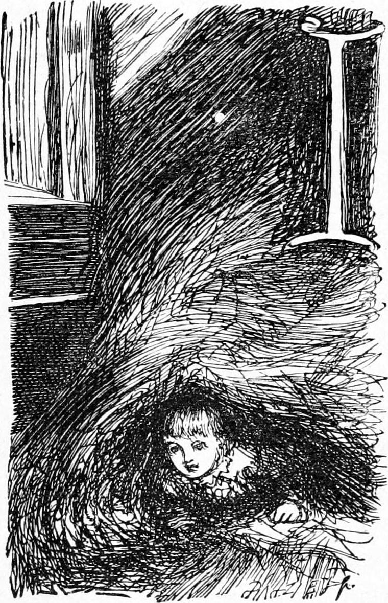

I woke, and creeping out of my lair, and peeping from the door of the barn, which looked into the cornyard, found that the sun was going down. I had already discovered that I was getting hungry. I went out at the other door into the close or farmyard, and ran across to the house. No one was there. Something moved me to climb on the form and look out of a little window, from which I could see the manse and the road from it. To my dismay, there was Mrs. Mitchell coming towards the farm. I possessed my wits sufficiently to run first to Kirsty’s press and secure a good supply of oatcake, with which I then sped like a hunted hare to her form. I had soon drawn the stopper of straw into the mouth of the hole, where, hearing no one approach, I began to eat my oatcake, and fell asleep again before I had finished.
And as I slept I dreamed my dream. The sun was looking very grave, and the moon reflected his concern. They were not satisfied with me. At length the sun shook his head; that is, his whole self oscillated on an axis, and the moon thereupon shook herself in response. Then they nodded to each other as much as to say, “That is entirely my own opinion.” At last they began to talk; not as men converse, but both at once, yet each listening while each spoke. I heard no word, but their lips moved most busily; their eyebrows went up and down; their eyelids winked and winked, and their cheeks puckered and relaxed incessantly. There was an absolute storm of expression upon their faces; their very noses twisted and curled. It seemed as if, in the agony of their talk, their countenances would go to pieces. For the stars, they darted about hither and thither, gathered into groups, dispersed, and formed new groups, and having no faces yet, but being a sort of celestial tadpoles, indicated by their motions alone that they took an active interest in the questions agitating their parents. Some of them kept darting up and down the ladder of rays, like phosphorescent sparks in the sea foam.
I could bear it no longer, and awoke. I was in darkness, but not in my own bed. When I proceeded to turn, I found myself hemmed in on all sides. I could not stretch my arms, and there was hardly room for my body between my feet and my head. I was dreadfully frightened at first, and felt as if I were being slowly stifled. As my brain awoke, I recalled the horrible school, the horrible schoolmistress, and the most horrible dog, over whose defeat, however, I rejoiced with the pride of a dragon-slayer. Next I thought it would be well to look abroad and reconnoitre once more. I drew away the straw from the entrance to my lair; but what was my dismay to find that even when my hand went out into space no light came through the opening. What could it mean? Surely I had not grown blind while I lay asleep. Hurriedly I shot out the remainder of the stopper of straw, and crept from the hole. In the great barn there was but the dullest glimmer of light; I had almost said the clumsiest reduction of darkness. I tumbled at one of the doors rather than ran to it. I found it fast, but this one I knew was fastened on the inside by a wooden bolt or bar, which I could draw back. The open door revealed the dark night. Before me was the cornyard, as we called it, full of ricks. Huge and very positive although dim, they rose betwixt me and the sky. Between their tops I saw only stars and darkness. I turned and looked back into the barn. It appeared a horrible cave filled with darkness. I remembered there were rats in it. I dared not enter it again, even to go out at the opposite door: I forgot how soundly and peacefully I had slept in it. I stepped out into the night with the grass of the corn-yard under my feet, the awful vault of heaven over my head, and those shadowy ricks around me. It was a relief to lay my hand on one of them, and feel that it was solid. I half groped my way through them, and got out into the open field, by creeping through between the stems of what had once been a hawthorn hedge, but had in the course of a hundred years grown into the grimmest, largest, most grotesque trees I have ever seen of the kind. I had always been a little afraid of them, even in the daytime, but they did me no hurt, and I stood in the vast hall of the silent night—alone: there lay the awfulness of it. I had never before known what the night was. The real sting of its fear lay in this—that there was nobody else in it. Everybody besides me was asleep all over the world, and had abandoned me to my fate, whatever might come out of the darkness to seize me. When I got round the edge of the stone wall, which on another side bounded the corn-yard, there was the moon—crescent, as I saw her in my dream, but low down towards the horizon, and lying almost upon her rounded back. She looked very disconsolate and dim. Even she would take no heed of me, abandoned child! The stars were high up, away in the heavens. They did not look like the children of the sun and moon at all, and they took no heed of me. Yet there was a grandeur in my desolation that would have elevated my heart but for the fear. If I had had one living creature nigh me—if only the stupid calf, whose dull sleepy low startled me so dreadfully as I stood staring about me! It was not dark out here in the open field, for at this season of the year it is not dark there all night long, when the sky is unclouded. Away in the north was the Great Bear. I knew that constellation, for by it one of the men had taught me to find the pole-star. Nearly under it was the light of the sun, creeping round by the north towards the spot in the east where he would rise again. But I learned only afterwards to understand this. I gazed at that pale faded light, and all at once I remembered that God was near me. But I did not know what God is then as I know now, and when I thought about him then, which was neither much nor often, my idea of him was not like him; it was merely a confused mixture of other people’s fancies about him and my own. I had not learned how beautiful God is; I had only learned that he is strong. I had been told that he was angry with those that did wrong; I had not understood that he loved them all the time, although he was displeased with them, and must punish them to make them good. When I thought of him now in the silent starry night, a yet greater terror seized me, and I ran stumbling over the uneven field.
Does my reader wonder whither I fled? Whither should I fly but home? True, Mrs. Mitchell was there, but there was another there as well. Even Kirsty would not do in this terror. Home was the only refuge, for my father was there. I sped for the manse.
But as I approached it a new apprehension laid hold of my trembling heart. I was not sure, but I thought the door was always locked at night. I drew nearer. The place of possible refuge rose before me. I stood on the grass-plot in front of it. There was no light in its eyes. Its mouth was closed. It was silent as one of the ricks. Above it shone the speechless stars. Nothing was alive. Nothing would speak. I went up the few rough-hewn granite steps that led to the door. I laid my hand on the handle, and gently turned it. Joy of joys! the door opened. I entered the hall. Ah! it was more silent than the night. No footsteps echoed; no voices were there. I closed the door behind me, and, almost sick with the misery of a being where no other being was to comfort it, I groped my way to my father’s room. When I once had my hand on his door, the warm tide of courage began again to flow from my heart. I opened this door too very quietly, for was not the dragon asleep down below?
“Papa! papa!” I cried, in an eager whisper. “Are you awake, papa?”
No voice came in reply, and the place was yet more silent than the night or the hall. He must be asleep. I was afraid to call louder. I crept nearer to the bed. I stretched out my hands to feel for him. He must be at the farther side. I climbed up on the bed. I felt all across it. Utter desertion seized my soul—my father was not there! Was it a horrible dream? Should I ever awake? My heart sank totally within me. I could bear no more. I fell down on the bed weeping bitterly, and wept myself asleep.
Years after, when I was a young man, I read Jean Paul’s terrible dream that there was no God, and the desolation of this night was my key to that dream.
Once more I awoke to a sense of misery, and stretched out my arms, crying, “Papa! papa!” The same moment I found my father’s arms around me; he folded me close to him, and said—
“Hush, Ranald, my boy! Here I am! You are quite safe.”
I nestled as close to him as I could go, and wept for blessedness.
“Oh, papa!” I sobbed, “I thought I had lost you.”
“And I thought I had lost you, my boy. Tell me all about it.”
Between my narrative and my replies to his questionings he had soon gathered the whole story, and I in my turn learned the dismay of the household when I did not appear. Kirsty told what she knew. They searched everywhere, but could not find me; and great as my misery had been, my father’s had been greater than mine. While I stood forsaken and desolate in the field, they had been searching along the banks of the river. But the herd had had an idea, and although they had already searched the barn and every place they could think of, he left them and ran back for a further search about the farm. Guided by the scattered straw, he soon came upon my deserted lair, and sped back to the riverside with the news, when my father returned, and after failing to find me in my own bed, to his infinite relief found me fast asleep on his; so fast, that he undressed me and laid me in the bed without my once opening my eyes—the more strange, as I had already slept so long. But sorrow is very sleepy.
Having thus felt the awfulness and majesty of the heavens at night, it was a very long time before I again dreamed my childish dream.